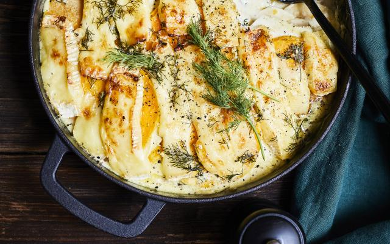

Groentegratin met camembert

INGREDIENTEN VOOR 4 PERSONEN
- pastinaken 3
- flespompoenen 2
- knoflook 1 teentje
- dille (+ extra voor de afwerking) handje
- room 400 ml
- camembert (in plakken) 240g
- mosterd1 el
- olijfolie
- peper en zout
BEREIDING
- Verwarm de oven voor op 200°C. Schil de pastinaken en snij ze in dunne plakjes. Schil de hals van de
flespompoenen en snij ze ook in dunne plakken. Snipper de dille fijn.
- Vet een ovenschaal in met olijfolie. Verwarm de room met de mosterd, de dille en de geperste knoflook tot
net
tegen het kookpunt. Kruid met peper en zout.
- Leg de pompoen- en pastinaakplakjes dakpansgewijs in de ovenschaal. Beleg met plakjes camembert. Giet er
de
warme room over en zet de schaal in de oven. Laat de gratin ongeveer 35 minuten garen. Werk af met een extra
takje dille en serveer.